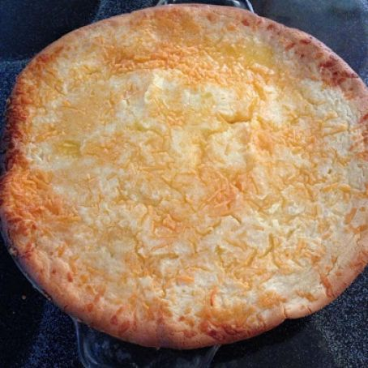

Home
Babingka

Ingredients
rice flour*
salt
baking powder
butter
sugar
coconut milk
milk
eggs
grated cheese optional
grated coconut optional
Directions
combine 1 cup rice flour, 2 1/2 tsp baking powder and 1/8 salt in a bowl and set aside.
In a separate bowl, cream 3 tbsp butter then gradually add 1/2 cup sugar. Add 3 eggs and whisk until combined.
Slowly add the flour mixture then pour in the milk and coconut milk and mix for 2 mins.
Preheat the oven to 375f or 190c and line a pan with parchment paper.
Pour in mixture and cook for 15mins.
Remove from oven and top with 1/2 cup grated cheese.
Put back in oven and cook for 15-20 mins or until the top is brown.
Remove from oven and top with grated coconut.
Serve hot.
Notes
If you don't have rice flour you can easily mill any kind of rice and it will work just as well.